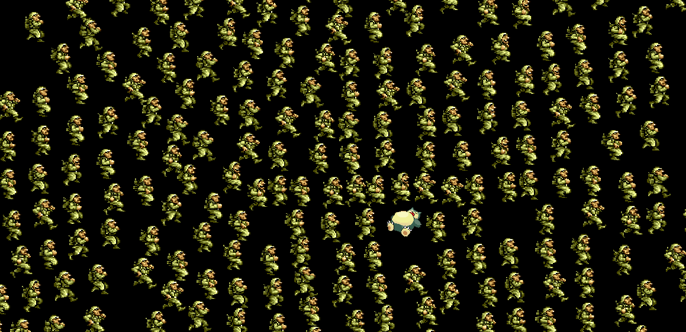
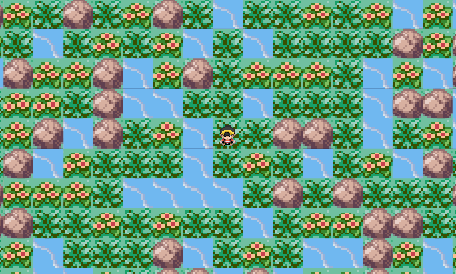
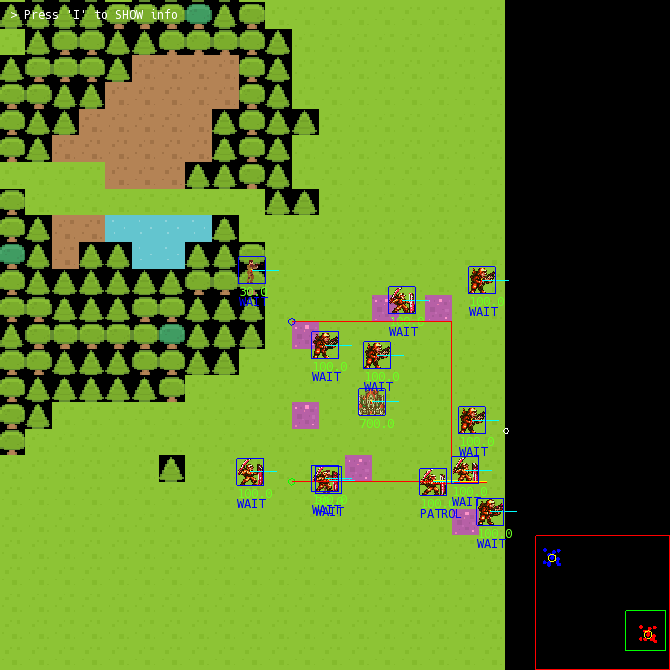
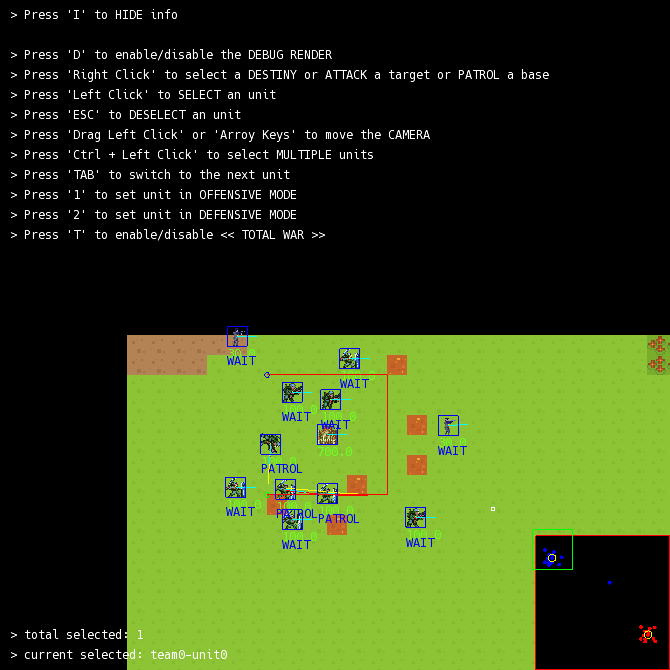
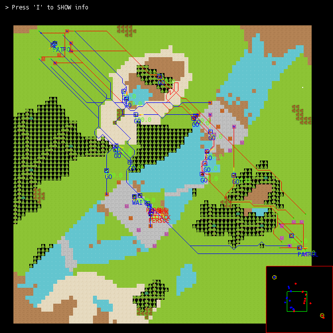
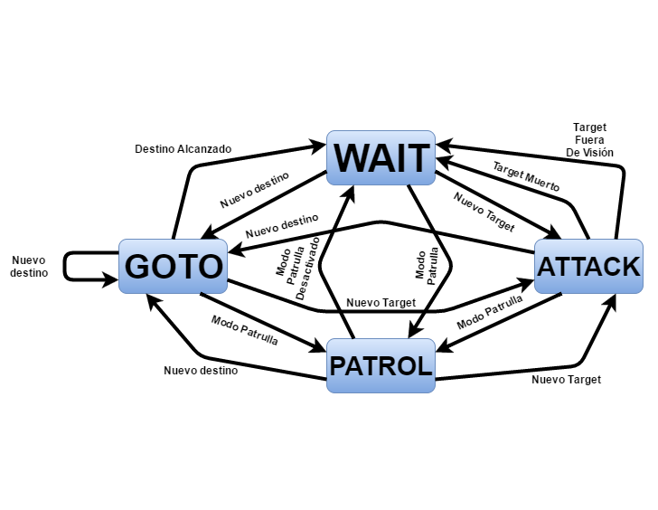

Lords Of The Fallen V 2.5 | Full Game | Longplay Walkthrough Gameplay No Commentary
https://www.youtube.com
 Adrian Egea
Adrian EgeaC++ Unreal Engine 5 Blueprints GAS Gameplay Porting Consoles Systems CI/CD Build Systems Animation Programming Vulkan OpenGL Python HTML5 Linux
Software Engineer & Game Developer (Computer Science degree) with over 9 years of experience specializing in Unreal Engine 5 and Modern C++ (17/20/23) and passionate about creative projects. My strongest skills are patience and creativity, they allowed me to become self-taught gamedev, code my own Vulkan Game Engine and take part in multiple AA/AAA Unreal Engine projects like Lords of the Fallen (2023, PS5, XSX, PC) and Gothic Remake (2026 PS5, XSX, PC). I am also capable to cooperate with a team in a high pressure environment and fast learner. I’ve joined projects in different stages like pre-release, mid production, and greenfield projects.
HexWorks (CI Games) ARPG Soulslike Multiplayer Coop Unreal Engine 5 PS5 XSX PC
Lords Of The Fallen V 2.5 | Full Game | Longplay Walkthrough Gameplay No Commentary
https://www.youtube.com


Alkimia Interactive (THQ Nordic) ARPG Single Player Unreal Engine 5 PS5 XSX PC

GOTHIC 1 REMAKE Gameplay Walkthrough FULL GAME (4K 60FPS) No Commentary
https://www.youtube.com


Underdog Studio (CI Games) Third Person Action Multiplayer Coop Unreal Engine 5 FlowGraph PS5 XSX PC
GitHub - MothCocoon/FlowGraph: Design-agnostic node system for scripting game’s flow in Unreal Engine
https://github.com

GRIP Studios Third Person Simulation Unreal Engine 5 Mod.io PS5 XSX PC
GitHub - modio/modio-ue: Unreal Engine Plugin for easily integrating mod.io into your game - the UGC management service for game developers
https://github.com

Radical Dreams Entertainment 株式会社 ??? Unreal Engine 5 PS5 XSX PC

Cl3ver C++ OpenGL

CL3VER | Real-time Cloud RTX Rendering on Google Cloud
https://www.youtube.com


C++ OpenGL Vulkan GLSL
C++ / OpenGL / Vulkan 3D Game Engine
https://github.com


JavaScript WebGL GLSL
JavaScript + WebGL 2D Game Engine
https://github.com


Java LibGDX State Machines Flocking Pathfinding (A*) Steering Behaviors Game AI
Game AI Project
https://github.com



